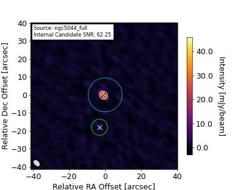

Source Information for 250107_11:09:13 (ObsID 00000)
|
0 |
| polaris_folder |
. |
| target_dir |
/sma/data/science/mir_data/250107_11:09:13 |
| sciTargs |
NGC5044 |
| gainCals |
1337-129 |
| fluxCals |
Uranus, Vesta |
| bpCals |
3c84, 3c279 |
| polCals |
0958+655_LR |
| selfCals |
|
| otherCals |
|
| deadList |
|
| projectTitle |
Unknown |
| projectID |
UNK |
| piName |
N/A |
| linkObsID |
|




|
field_name |
obs_date_time |
file_name |
beam_maj_axis |
beam_min_axis |
beam_pos_angle |
flux_uncertainty |
flux_density |
coord_ra |
coord_dec |
internal |
| source_1 |
ngc5044 |
6-13-25 11:26:53 |
ngc5044_full.fits |
4.485 arcsec |
2.892 arcsec |
44.0 deg |
0.736 mJy |
45.797 mJy |
198.85 deg |
-16.386 deg |
True |
| source_2 |
ngc5044 |
6-13-25 11:26:53 |
ngc5044_full.fits |
4.485 arcsec |
2.892 arcsec |
44.0 deg |
0.736 mJy |
3.817 mJy |
198.849 deg |
-16.391 deg |
False |